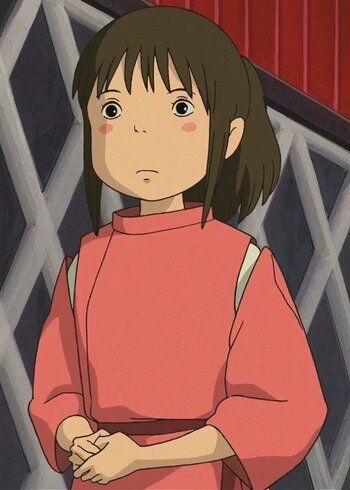
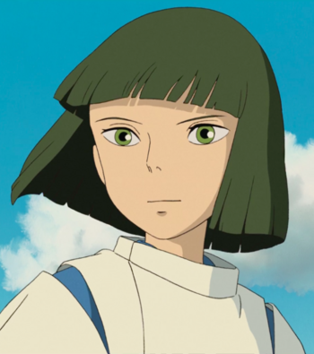
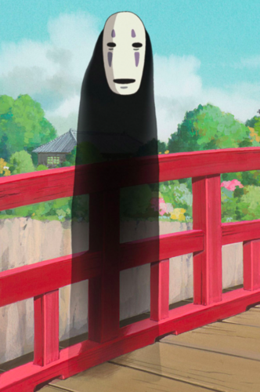
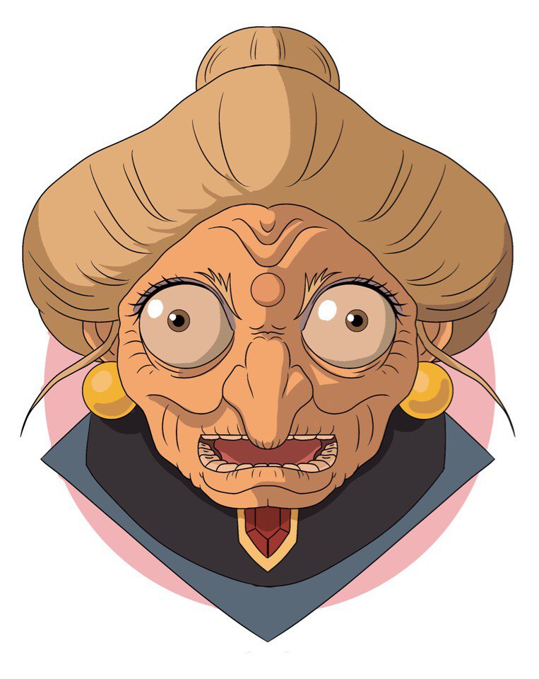
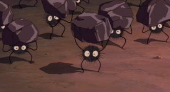
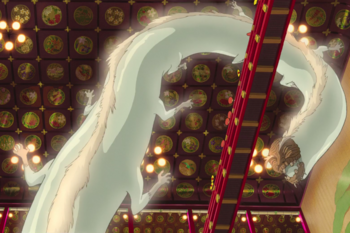

Chihiro , referred throughout most of the film by Sen , is the ten-year-old core protagonist of the Japanese animated film "Spirited Away"..
Physical Appearance
Chihiro is a ten-year-old girl who has brown hair, brown eyes, and rosy cheeks. She is very petite and has a childish appearance, and a pudgy face. Her attire includes a white medium-sleeved T-shirt with bright green stripes, bright red shorts, white socks and sunshine yellow sneakers. While working in the bath house, she is barefoot and wears a bright red and white work uniform with a tasuki cord for tying her sleeves up.
Personality
Chihiro's growth into a capable individual is a core factor to the movement of Spirited Away's plot. During her adventure in the Spirit World, she matures from an easily scared girl with a childlike personality to match her age to a hard-working, responsible, and brave young girl who has learned to put her fears aside for those she cares for. To protect her friends and rescue her parents from a spell that has turned them into livestock, Chihiro sheds her former personality and adapts to her environment to become a courageous, quick-witted and reliable girl.
The strength of her bond with Haku as the story progresses eventually evolves into a very sincere form of love that dispelled Yubaba and Zeniba's respective curses on Haku.

Nigihayami Kohakunushi, referred throughout most of the film by the name Yubaba gives him: Haku, is the protagonist in the 2001 animated film "Spirited Away".
Physical Appearance
Haku appears to be around 12 years old in physical age. He has straight, black hair in a bob haircut and slanted, green eyes when he is human. Haku wears a traditional white Haori jacket tied with a lavender sash, a traditional indigo dyed Jinbei underneath, and beige sandals. When he transforms into his dragon form, he has a teal and mint green mane, with a white, scaled body.
Personality
Haku as a dragon
Haku has multiple personalities. He can be kindhearted and supportive at times, strict and high-strung at other times. He is wise, and is able to act accordingly to the situation. He is more than willing to stick his neck out when he cares about someone. From the beginning of the story, through to the end, he does everything within his power to keep Chihiro unharmed and to help her leave safely. His steadfast resolve helps Chihiro finally trust him, amidst contradictory information from other Spirited Away characters about him.
Of course, Haku always said she could trust him. Lin, however, was not sure of Haku's intentions, and told Chihiro to not trust him. Yubaba's twin sister, Zeniba insisted that Haku is a greedy thief, who had stolen her golden seal. In the end, Chihiro puts her faith in Haku. Later on, it is revealed that Haku is Yubaba's slave, who controlled him with a black worm in his body.

No-Face is a spirit and a secondary
antagonist in the Studio Ghibli film "Spirited Away". He is shown to be capable of reacting to emotions and ingesting other individuals in order to gain their personality and physical trait.
When first introduced, No-Face appeared in a semi-transparent state while shifting in and out of visibility. His organs are visible, pulsating in several states. His figure resembles that of a long, black tube. While it is unknown if No-Face has a physical body, it is shown that he can develop arms and legs with the capability of leaving footprints as he walks. An ominous, expressionless mask with grey-violet highlights is painted on his "head" of sorts, and while there is a "mouth" painted on the mask, No-Face has shown that his real, expertly-hidden mouth is larger than the one present on his mask.
Abilities
Mimicry: Whenever he eats a creature, he uses its voice and abilities. For example, after eating Aogaeru, he speaks with Aogaeru's voice and he starts to jump like a frog. He also takes on Aogaeru's personality.
If he eats more creatures, he will speak with different voices simultaneously. Because of this ability, his gender is unclear.
Alchemy: He can transform mud and dirt into objects like gold.
Absorbing: He can eat anything, whether it's food or spirits. This may be an extension of his mimicry ability.
 Kamaji is an elderly man with six, long arms who operates the boiler room of the Bathhouse. He appears as a spider (Jap. Tsuchigumo) in the film Spirited Away directed by Hayao Miyazaki of Studio Ghibli.
Appearance
His limbs can apparently extend indefinitely, enabling him to access the upper cabinets of his workplace without having to leave his original work position. Kamajī appears to spend most of his time at his workplace, as he is seen sleeping and eating his meals there.
A number of Sootballs work for him by carrying coal into his furnace. He has large cabinets where he keeps all the herbs that are used in the baths. He rarely stands up, so you hardly see his two tiny legs.
Abilities
Spirited-awaybr-disneyscreencaps.com-2956.jpg
His limbs can extend, enabling him to access the upper cabinets of his workplace without having to leave his original work position. He uses his arms to move instead of his short legs. He only leaves his position once to help the injured Haku.
He has a good memory. He knows where the herbs are placed and takes them from the cabinets without looking back. He is also knowledgeable about Spirit Realm medicine and magic. He instantly recognized the herb medicine in Chihiro's hand and knows how to break Zeniba's curse on Haku. He can make Sootballs out of soot.
Kamaji is an elderly man with six, long arms who operates the boiler room of the Bathhouse. He appears as a spider (Jap. Tsuchigumo) in the film Spirited Away directed by Hayao Miyazaki of Studio Ghibli.
Appearance
His limbs can apparently extend indefinitely, enabling him to access the upper cabinets of his workplace without having to leave his original work position. Kamajī appears to spend most of his time at his workplace, as he is seen sleeping and eating his meals there.
A number of Sootballs work for him by carrying coal into his furnace. He has large cabinets where he keeps all the herbs that are used in the baths. He rarely stands up, so you hardly see his two tiny legs.
Abilities
Spirited-awaybr-disneyscreencaps.com-2956.jpg
His limbs can extend, enabling him to access the upper cabinets of his workplace without having to leave his original work position. He uses his arms to move instead of his short legs. He only leaves his position once to help the injured Haku.
He has a good memory. He knows where the herbs are placed and takes them from the cabinets without looking back. He is also knowledgeable about Spirit Realm medicine and magic. He instantly recognized the herb medicine in Chihiro's hand and knows how to break Zeniba's curse on Haku. He can make Sootballs out of soot.

Yubaba (Granny by Chihiro at the climax of the film) is the proprietor of the Bathhouse and the main antagonist of the Japanese animated film Spirited Away. She is the identical younger twin sister of Zeniba and the mother of Boh. She has a bird servant affectionately referred to by fans as Yu-Bird, an apprentice by the name of Haku, and is the employer of maybe hundreds of other bathhouse workers.
Physical Appearance
Yubaba is Zeniba's younger twin sister and, as such, is almost completely identical to her. She has an inhumanly-large figure and a large mound of gray hair combed into a bun-like style. Her age is never stated, but Yubaba is very wrinkly, most likely ancient. She has dark brown eyes accentuated with lavender eye shadow as well as a prominent crooked nose drawing attention to a bindi-like mole between her eyebrows. She also wears golden earrings identical to those of her twin sister's. Unlike her sister, Yubaba is not shown with glasses in the film.
Personality
As the main antagonist of the film, Yubaba has an extremely overbearing and intimidating personality. Like many other workers of her infamous bathhouse, Yubaba obsesses greedily over gold and is shown to be willing to view gold as a priority over her own family (especially Zeniba, whom she expresses hatred for). However, she has, in some instances, shown a great amount of motherly care for her son, Boh, and is seen completely devastated when the latter states that he "won't like [her] anymore" if she continues to treat Chihiro Ogino unfairly towards the end of the film.s

The Soot Sprites are spirits that appear in the films My Neighbor Totoro and Spirited Away. They are small, round balls made from the soot that dwells in old and abandoned houses and leave black dirt in their wake. If the house becomes inhabited, they decide if the inhabitants are nice people. If they are, they will leave.
Physical Appearance
The Soot Sprites (conjured from soot itself) are small, black, fuzzy creatures with spherical bodies and white eyes with black pupils. Their usual mode of transportation is levitating/hovering, but it is revealed in the film that they can extend black, wiry limbs (arms and legs) from their bodies to accomplish certain tasks (in this case, moving coal into the furnace) and can lift objects many times their own weight. They also dissolve into soot if crushed, but quickly reform themselves shortly after.
Diet
One can feed Soot Sprites like how a farmer feeds chickens, throwing handfuls of Kompeitō (a hard Japanese candy) from a bucket onto the ground for them to pick up and eat. The Susuwatari are not seen eating anything else other than kompeito in the film.
Attributes
Sleeping Chihiro.jpeg
Soot Sprites are not capable of speaking human languages and instead make certain, squeaky, murmuring sounds when they are excited, angry, annoyed or ecstatically happy. It is mentioned that, because the Soot Sprites in the film are magically conjured, they will turn back into soot without a job for them to do. While they are not capable of speaking the human language, they are shown to be able to understand it, and respond to orders given to them by Kamajī.

Unnamed River Spirit is a supporting character in the Japanese animated film "Spirited Away", directed by Hayao Miyazaki of Studio Ghibli.
He first appears as a grubby, sludge-infested spirit, referred to by Yubaba and her subordinates as a "Stink Spirit", but is soon revealed to be an extremely wealthy and powerful spirit in the Spirit Realm.
By his appearance, he is an extremely old river spirit, evident by the countless wrinkles on his face, white-colored eyebrows and the thinning amounts of facial hair and lack of teeth, the River Spirit is revealed to have a water-based body in his original form with multiple, wiry, avian legs.
In his first introduction in the film, the River Spirit is shown to be a disgusting, grimy, muck-infested spirit mistaken to be a "stink spirit" by many. However, Yubaba notes that he didn't seem like a stink spirit and ordered Chihiro Ogino to wash him in the Big Tub. After being relieved of all the human-made trash that had clogged up his body, the unnamed River Spirit was freed from all the gunk he was carrying and revealed himself to be a grand, dragon-like spirit.
Personality
Not much of the River Spirit's personality is made apparent in the film. It is known that he is a very rich and powerful spirit with much influence in the Spirit Realm. He is shown to be very energetic once freed of his polluted burden and displays a hefty amount of gratitude to Chihiro, who freed him, by giving her a famous type of medicine as thanks. He is also generous, leaving a great amount of gold pieces on the ground as a tip to the Bathhouse workers for their service to him.